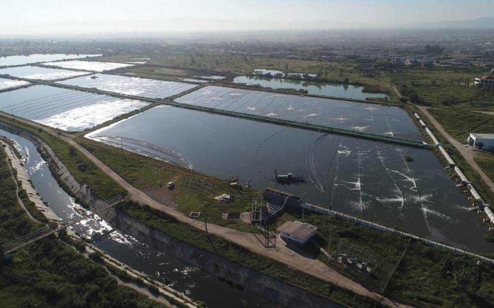

|
Disponibilidad limitada de agua: Sobrexplotación de acuíferos: Ineficiencia en el uso del agua en la agricultura: Contaminación del agua: Falta de infraestructura y acceso a servicios de agua potable y saneamiento: Que estamos haciendo para mejorar la calidad del agua en durango
La administración municipal de Durango se encuentra proactivamente enfocada en prevenir la escasez de agua potable, aprendiendo de experiencias de otras ciudades en el país que ya enfrentan esta problemática. Bajo la iniciativa "Agua contigo", implementada por el alcalde Antonio Ochoa Rodríguez durante los primeros 100 días de su administración, se han realizado significativas inversiones a través de Aguas del Municipio de Durango (AMD) por un monto cercano a los 20 millones de pesos. Uno de los aspectos fundamentales de esta iniciativa ha sido la relocalización de tres pozos, beneficiando a aproximadamente 100 mil habitantes y asegurando un suministro de agua más abundante. Además, se ha llevado a cabo la renovación de dos redes de tuberías y la construcción de un colector pluvial, acciones que fortalecen la infraestructura hídrica de la ciudad.  Rodolfo Corrujedo Carrillo, titular del organismo operador, resalta la importancia de planificar acciones a mediano y largo plazo, destacando la necesidad de estrategias preventivas para evitar situaciones similares a las que enfrentan otras ciudades, como Monterrey, Nuevo León. En esta línea, Durango busca prevenir la falta de agua mediante medidas anticipadas y estratégicas, reconociendo que los problemas hídricos requieren soluciones planificadas y sostenibles. Además de mejorar la cantidad de agua disponible, estas acciones buscan salvaguardar la calidad del recurso, prevenir el robo de agua y mejorar la gestión de aguas pluviales en el suroriente de la ciudad. La reposición de dos redes de tuberías ha permitido ahorrar un millón de litros de agua, equivalente a 100 mil cubetas de 10 litros cada una, contribuyendo así a la eficiencia en el uso del recurso. En un esfuerzo integral, se proyecta garantizar el abastecimiento de agua potable para los próximos 40 o 50 años, aspirando a convertir a Durango en una ciudad competitiva y atractiva para la inversión, respaldada por la seguridad y suficiencia en el recurso natural. Estas medidas reflejan un compromiso continuo con la sostenibilidad y la preservación de un recurso vital para la comunidad duranguense.
|